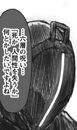

Slackライク分散SNS「Matrix」の紹介

この記事は Fediverseアドベントカレンダー(1) 4日目の記事です。
Fediverseアドベントカレンダー(2) は こちら 。(3)まで出来てるみたいです 。いま見たら (4)までできてました
つい数日前、SalesforceがSlackを買収するというニュースが流れてきましたね。
Salesforce、Slackを277億ドル（約2兆8900億円）で買収 - ITmedia NEWS
Slackをはじめ、MS TeamsやDiscordなどといった、チャンネル参加型のチャットサービスは昨今のリモートワークムーブメントによってかなり広く使われるサービスとなっています。
SlackやDiscordなどのサービスを使ってる人は多いですが、これって、いわゆる単一の企業が提供している中央集権サービスなんですよね。
ルールはその企業に制限され、プライバシーな情報はすべてその企業の采配で変わってくるわけです。これはあまり自由とは言えませんよね。
自由を謳うインターネット、「中央集権システムか 分散システムか」何とかしたいですよね。

そのため、今回のアドベントカレンダーではFediverse界隈にもあるチャットサービス、「Matrix」を紹介しようと思います。
ただ一点注意しておきますが、今回紹介するMatrixはこのActivityPubプロトコルを採用していません。独自プロトコルを採用した分散型ソーシャルネットワークを構築しています。
今回のFediverseアドベントカレンダーでActivityPub系サービスを期待してしまっていた人はすいません。
個人的には「Fediverse ＝ ActivityPub」とは思っていないため、あえてこの場で紹介させてもらいたいと思います。
また、フェデレーション機能が実装されている他のSNSも知っておくことでFediverseコミュニティの発展につながるのではないかと思い、今回紹介させていただくことにしました。
(一応、ActivityPubプロトコルを採用したチャンネル参加型サービスとしてはPrismoというものがありますが、数年前からずっとベータ版で正式版リリースも未定となっています。興味のある方は prismo.fedibird.com などでお試し利用をしてみるといいでしょう)
最初に
記事が長くなってしまったので、最初に宣伝しときます。
- お試しMatrixサーバ立ち上げました。
Matrix公式がホスティングしている公式サーバ に登録していただいてもいいですが、こちらに登録していただくとフェデレーション機能についてより具体的なことがわかるかと思います。
<matrix.sabakan.industries>
※より手軽に管理者になってみたい場合は ホスティングサービス もあります。
- こちらの記事は紹介編となります。構築編も今回のAdventCalender日程内で後ほど紹介します。自分でサーバを立ち上げてみたいという方はそちらも御覧ください。
Matrixとは
Matrixは、SlackやDiscordなどのようなチャンネル参加型のチームコミュニケーションツールです。(最初に書いた)
できること：
- メッセージング
チャンネルに参加してメッセージのやり取りをすることができます。
ユーザ間でDMのやり取りをすることもできます。
テキストはマークダウンを使って簡単な装飾を施すことができます。
絵文字も使えますが、カスタム絵文字のような機能は存在しないみたいです。 - VoIP
WebRTCを使った音声通話/ビデオ会議機能が使えるみたいです。(未検証) - End-to-Endで通信の暗号化
- ブリッジ(フェデレーション)機能
Fediverseアドベントカレンダーとして今回記事を書いているので、Mastodon、Pleroma、MisskeyなどのActivityPubサービスに登録している人が多いでしょう。
なのでこの記事ではMatrixとActivityPubサービスとの違いを中心に紹介を中心にします。
フェデレーション機能について
ActivityPubでは慣習的にアカウント名を「
連合のチャンネル名を指定する場合は同様に「#
リモートサーバのチャンネルに参加するには条件があります
- 公開チャンネル、限定チャンネルの場合は招待されていること
- リモートサーバのホワイトリストにローカルサーバのドメインが登録されていること
サーバ間で相互にチャンネル参加したい場合は、お互いの管理者がそれぞれのサーバのドメインをホワイトリスト登録する必要があります。
片思いの場合(他サーバのドメインを一方的に登録した場合)は他サーバに所属するユーザがチャンネルに参加しに来ることは可能ですが、他サーバのチャンネルに参加しに行くことはできません。
ActivityPubとの関係
MatrixとActivityPubは全く異なるプロトコルなので、関係性/互換性の類はありません。
なので、相互通信をすることは出来ません。
ただし他のWebサービスと同様にMatrixもAPIを提供しているので、独自にクライアントやbotを開発することは可能です。
そういったMatrix用のツールは こちらの公式ページ にまとめられていて、投稿をマストドンに流すためのbotもあるみたいです。
また、Matrixはサービス名ではなく、ActivityPubのようなプロトコルというかシステムの総称みたいなものです。
自分で構築してみたいという人は、サーバに導入する実際のパッケージ名がMatrixとは限らないことに注意が必要です。
サーバ/クライアントが完全に分断されたシステム
Matrixを利用するためのパッケージは こちらの公式ページ でまとめられています。
一番ポピュラーなところは、サーバサイドがSynapse、クライアントサイドがElement(旧Riot.im) です。
Matrixでは、APIなどを提供するバッグエンドのシステムと、Webサービスなどのフロントエンドのシステムは完全に分けて開発されています。
ActivityPub界隈に置いては、基本的にサーバを構築したらWebクライアントがついてくるのが基本となっていますが、Matrixではそうとは限りません。
これによって構築の手順が増えますが、代わりにバッグエンド/フロントエンドの組み合わせが自由にできたり、バック/フロントエンドだけのサービスを提供するということも可能になります
(ただし 同ドメイン上にクライアントを導入することを推奨すると公式でアナウンスされています 。)
ここらへんの事情があって、特定のシステム名でサービスを呼ぶのではなく、Matrixという共通名が浸透したのかもしれませんね。(しらんけど)
Matrixの中で一番開発が盛んなのはSynapse/Elementの組み合わせかと思います。
別記事で紹介する予定のMatrix構築手順についても、この組み合わせを使っています。
セキュリティとプライバシー
SNSというかWebサービスを利用する上でつきまとうのが、セキュリティとプライバシーの問題です。
例えばアカウント乗っ取りなどによる不正ログインとか、暗号化していないメッセージの傍受とかといった話です。
ここではマストドンを比較対象として説明します。
マストドンにおいてDMはリプライをつけたユーザ間でしかその内容を見ることが出来ないということになっています。
しかし、その内容はデータベースを直接覗けばどういうやり取りがされているか確認することが出来ます。
こういう話を切り出すと、信頼できない管理者に覗かれるとかそういう話になりがち(少なくとも僕としては)だと思いますが、どちらかといえば信頼できるサーバ管理者ほど気をつけたほうがいいかもしれないと思っています。
例えば、とても信頼できる絶対に悪さをしなそうな管理者だったとしても、技術的に未熟でセキュリティ対策が不十分だった場合、サーバに不正アクセスがありDBの情報が盗まれるという対策をとっていない可能性が考えられます。
その場合どんなに仏のようなサーバ管理者であったとしても、信頼できない管理者だというレッテルを貼られてしまうことになります。
そのためマストドン界隈に置いても、End-to-Endの暗号化についてはたびたび議論の的になっていますが、未だにその解決には至っていません。
その理由の一つとして、暗号鍵をユーザ間で交換する必要があるわけですが、どのように交換すればいいのか、鍵を渡す相手がどのようにして本人であるか証明するのか難しいというような課題があると考えています。
Matrixでは多要素での本人認証プロセスを実装しており、ユーザの投稿を保護するためにEnd-to-Endでの暗号化に対応しています。
Facebook MessengerやWhatsAppで採用されていたDouble Ratchet Algorithmという鍵交換アルゴリズムをベースとして、更に拡張させたOlmやMegolmといった暗号化を施しているそうです。
使いどころ：社内チャットツールとして
Matrixのシステムは、セキュリティの高さやホワイトリスト形式のフェデレーション機能などの観点から、一般的なオープンなSNSというよりは、もう少しクローズドな、企業とかで採用したいタイプの性質を持ったSNSだな。という印象を受けました。
先に述べたように、他サーバへの参加はホワイトリスト登録してくれたところしかできません。
そのためユーザ間の交流はローカル内で行うことを基本とし、必要に応じて他サーバのユーザを招待する。といったような使い方になるでしょう。
ActivityPubにおいてはお一人様インスタンスなど、ごく少数のユーザが参加するインスタンスも多くありますが、こちらはそういった運用方法を取ろうとすると、ほとんど身動きが取れない状態となります。
ここが、基本的に他サーバからのリクエストを許容するActivityPubとの大きな違いかと思っています。
それと一般的な人が使うにはセキュリティレベルを高めすぎてしまって若干ユーザビリティを下げてしまっている点があります。
例えばリカバリーコードを紛失したら暗号化されている部屋のメッセージが見れなくなるとか。新しい端末でログインすると他の端末での多要素認証を試行させられるなど。
セキュリティを考えればそれは正しい選択です。しかしサービスが利用しずらくなるという諸刃の剣にもなっています。
おそらく、これだけセキュリティ回りをしっかり作りこまれたサービスをオンプレで動かす必要があるのは、コンプライアンスにうるさい企業とかではないかと思います。
とはいえ、(何度目かになりますが)セキュリティ周りではほんとに優秀なシステムだと思いますので、Fediverseのシステム開発につま先でも触れているような人にとっては、インスピレーションを受ける事ができるのではないかと思います。
外部に公開するのにも全然問題ないと思います。フェデレーション機能を使って、メールに代わる他企業とやり取りするためのプラットフォームにすることができるでしょう。
ぜひとも、興味のある方は触ってみることをおすすめします。
構築に興味がある方は、後ほど構築手順記事を上げますので、そちらもご覧いただければと思います。
おまけ：RocketChatのフェデレーション機能について
この記事を書いていて、そういえば他のチャットツールにもフェデレーション機能があるものはあるのだろうかと調べてみました。
Slackクローンとして有名なものとしては、MattermostやRocketChatがあります。
Mattermostのほうで紹介されていたのはSAMLによるアカウントのフェデレーション機能だけみたいです。RocketChatはMatrixのようなチャンネルのフェデレーションができるみたいです。
ただ、Matrixの方はフェデレーションありきで設計されているのに対し、こちらはもともとそういう機能はなかったため、通信の暗号化やサーバのホワイトリスト方式など、プライバシーの観点でまだまだ改善の余地があるみたいです。(というかActivityPub民としてはこちらのほうが馴染みやすいのではないかという予想も)
RocketChatの利点もあり、こちらにはカスタム絵文字がサポートされているみたいです。今回は触っていないのでMatrixとの比較はしきれないですが、候補としては含めることができると思います。
余談：鯖缶工場に関して
せっかくなので宣伝してもいいですか。
ダメでもします。
分散SNSを運用している(したい)サーバ管理者のためのコミュニティとして、鯖缶工場というdiscordサーバを管理しています。
(管理しているといっても、チャンネル内のやりとりにはほとんど関与していませんが)
サーバ管理において困ったことを質問したり、サーバ構築の経験がないけどやってみたいという時に相談してみたり、なんかそんな感じのコミュニティになってます。
そんなに頻繁に交流している感じはありませんが、なにか書き込みがあると誰かが反応してくれる緩やかに交流のある場です。
Mastodonの鯖缶が多いですが、管理している側としては特にサービスに限定していません。(もちろん分散SNSという縛りはありますが)
今回の記事を見ていただいた人はわかるように、僕としては単一のサービスにこだわるつもりはないです。Pleromaとか、Misskeyとか。いろんな鯖缶 (鯖缶やってみたい人) が集まってくれると嬉しいなと思っています。
と、Matrixの紹介記事でdiscordサーバの紹介でした。(discordである理由は一応あるのです)
興味を持ちましたら、ぜひご参加ください。他の鯖缶の方々の方法を学ぶという意味でも、無駄にはならないと思いますよ。